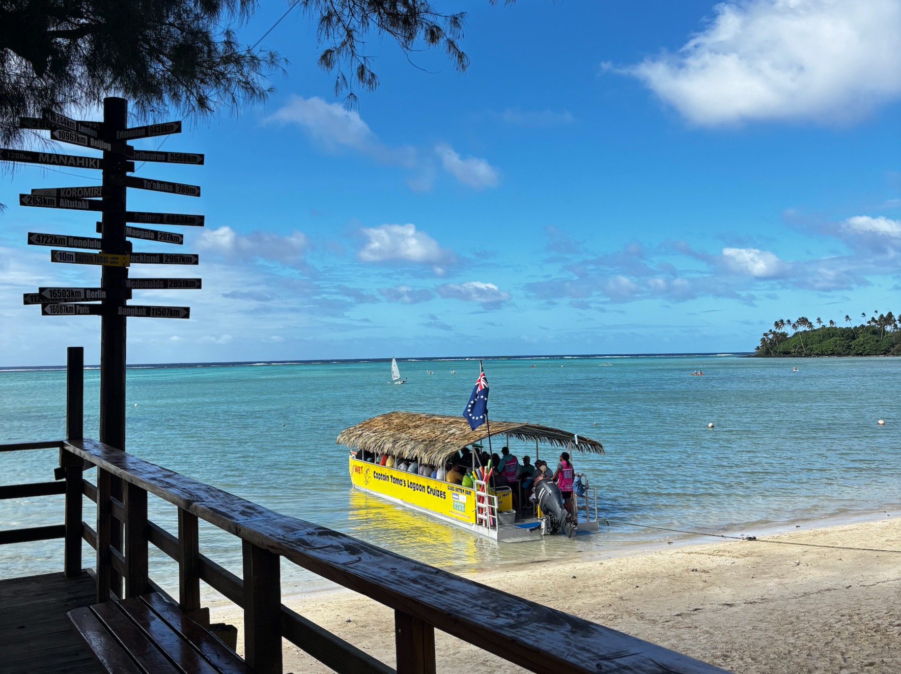
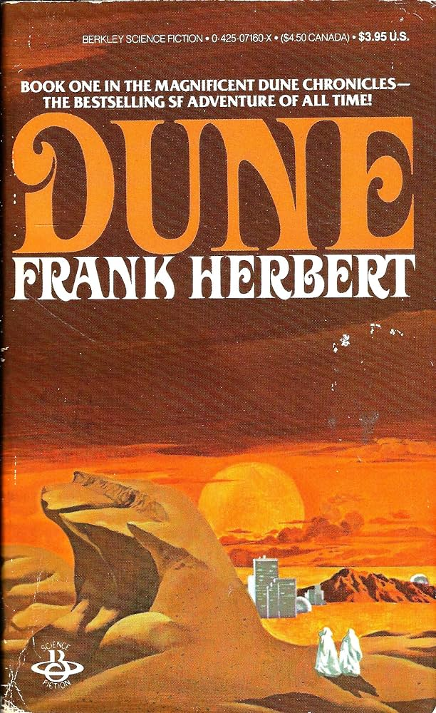

Samantha's Travels
Cook Islands

Overview
The Cook Islands are a self-governing island country in free association with New Zealand, located in the South Pacific Ocean between American Samoa and French Polynesia. It comprises 15 major islands with one main populated Island called Rarotonga and a smaller more tourist destination island called Aitutaki. There are two languages English and Cook Islands Māori (very closely related to te reo Māori with only a few slight differences) Rarotonga only has one main road that circles around the whole island and is only about 32 kilometers long, taking about an hour to do a full lap. The country also use two types of currency, New Zealand Dollar (NZD), alongside local Cook Islands coins and notes. The country is best known for its incredible lagoons and many great snorkelling and scuba-diving spots.

Personal Thoughts
I travelled for the first time to Rarotonga this year (2026) and unfortunately we were not blessed with very nice weather, as it rained the majority of the time I was there which put a bit of a dampener on the trip (pun intended)… On the days it was nice and sunny we hired a car which was good and meant we could park up near some nice beaches and go snorkelling. On my first snorkel not even 3 minutes from me entering the water I spotted a turtle! this was so cool and I got to follow it for ages and watched as it munched on some sea grass. On the days we didn’t have a car we utilised Rarotonga’s unique bus system. They have two busses that operate every day, a clockwise bus and anticlockwise. The cool thing about this system is that you are guaranteed to catch a bus every hour on the hour as they just keep doing laps around the island which takes an hour. It is a great experience as you can hop on and off anywhere you like, the only downside is the busses are old and the roads aren’t the best… so be in for a bumpy ride! Rarotonga has lots of tours like turtle tours, guided snorkelling, boat tours, you can book but unfortunately you need to book months in advance as they are extremely popular so we missed out which was a shame as it would of meant more things we could of done when the weather wasn’t great.